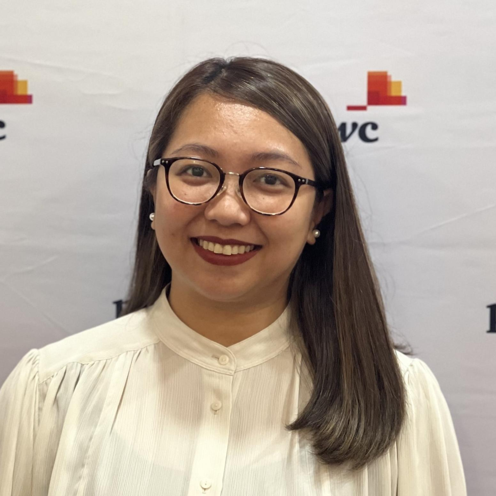

Meet the professionals behind PwC Philippines Managed Services PMO. Our team brings deep project management expertise across industries, tools, and methodologies.

KH
Katherine May Habelito
Senior Manager • BD Sponsor
JP
Jillyen Pagcaliwagan
Manager • BD Lead
The Team
11 dedicated professionals across Senior Manager, Manager, Senior Associate, and Associate levels — collectively bringing 65+ years of project management experience.
LY
Lyca Yngojo
Senior Manager18+ years in the industry
PMP®PMI-PMO CP™PSM1™ICP™ALMI™
Lyca has 18+ years of progressive experience in program and project management, customer service, and operations. She has managed multiple projects in varying scale and established the internal and client-facing project teams.
Program & Commercial Excellence Management — SEAC’s largest FS priority accounts
Country Growth Strategy — location leader partnership for fiscal growth targets
Workplace Enablement Transformation Program
Talent Process Transition for Americas and ASEAN
Product Owner: PM technology solution with vendor
Established internal and client-facing PM practice
KH
Katherine May Habelito
Senior Manager • BD Sponsor14 years in the industry
PMP®PMI-PMO CP™ICP
Kat is a results-oriented PM Professional with 14 years in Service Management, Consulting, and Business Outsourcing. She has completed projects in IT, Telecom, Digital Services, Manufacturing, and Banking.
OCM Lead: Transformation & Control Automation Program — GBS
PM and Finance Support: Cybersecurity Transformation Program
Wellness ambassador and teaming engagement advocate
RP
Randal Pasimio
Manager4 years at PwC • 10+ years total
PMP®ICPGoogle PM
Randal brings a decade of experience in project management, with prior expertise in manufacturing engineering focused on product localisation, process analysis, and improvement of operations.
Agile Software Dev, Supply Chain Data Exchange — cross-project financials
Key developer of project economics tool & PMO Dashboard
RC
Ryan Columna
Manager10+ years in the industry
PPSMMS Excel CertifiedIC Agile
Ryan offers expertise in metrics & SLA reporting, risk management, vendor management, resource management, work planning, and pipeline management across UK, US, and PH clients.
UK Tech Firm — risk & issue mitigation, RAID dashboards
PH Tech Firm — onboarding 300+ resources, SharePoint forms
US Energy Company — PMO lead, 15 members, 10+ CPIs/15+ KPIs
Patrick has IT and banking & finance experience, managing web projects and providing internal PMO support covering risk, resource, financial, contract, and documentation management.
IT — web development project planning (CMS, e-commerce, Shopify, HRIS)
JP
Jillyen Pagcaliwagan
Manager • BD Lead6 years in the industry
PMP®ICP
Jill has 6+ years in end-to-end Project Management and Governance Control. She handled construction projects in MEA & Turkey and is an experienced Document Controller and PMO professional.
PMO, Service Transformation Portfolio — financial management, resourcing
SAP Ariba Implementation — project plan, meeting decks, UAT/TTT
Extended Finance PMO Support, Aviation
DE
Dustin Jan Ervera
Senior Associate2 years at PwC • 5 years total
CIESix Sigma YBGoogle PM
Dustin brings 5 years of expertise in PM and Business Process Analysis, with certifications as a Certified Industrial Engineer and Google PM Professional. He has led Lean Six Sigma initiatives across SAP, Oracle, and Salesforce projects.
Extended Finance PMO, Aviation — SAP S/4HANA, PDD authoring
AT
Anneena Tolentino
Senior Associate4 years in the industry
Lean Six Sigma YBBS Industrial Engineering
Anneena excels in managing complex, multifaceted projects with a strategic mindset and strong attention to detail. Her expertise spans financial management, risk management, and regulatory compliance.
Portfolio Management, Global Luxury Brand — financial oversight
PMO Analyst, Bank in PH — stakeholder liaison, reporting
Proposal Commercials Manager, Government Linked Company in UK
Cesiah specialises in project operations management, change management, and HR transformation including job evaluation, organisational design, and business process design.
PMO & Governance, Primary ICT in PH Government — COVID-19 engagement
PMO Analyst, Bank in PH
Proposal Commercials Manager, Government Linked Company in UK
Marianne applies a structured, data-driven approach to initiatives across marketing, finance, and digital strategy. Known for optimising resource flows and presenting insights with clarity.
Therese has practical experience in project management, market research, and digital operations. Recognised as Top 16% globally at the 2025 X-Culture Project for international business solutions.
Project Management & Operations — planning to execution
Data Tracking — 3,000+ entries, 80% efficiency increase
Market Research — international expansion, top 16% X-Culture
PMO Support, SAP Ariba Implementation
Team at a Glance
11Team Members
65+Combined Years of Experience
6PMP® Certified
8ICAgile Certified
Industries We’ve Served
Our team has delivered PMO services across a wide range of sectors.
Banking & Finance
ERP transformations, finance programmes
Aviation
SAP S/4HANA, GBS service lines
Technology
Cloud migration, Salesforce, AWS
Government
Digital transformation, ICT programmes
Energy & Utilities
Operating model transformation
Insurance
Asset management, PMO governance
Telecommunications
BSS/OSS overhaul, change management
Luxury & Retail
Portfolio management, financial oversight
PMO Hub Assistant
Ask me about services, templates & more
👋 Hi! Need to know about our team? Ask me anything!